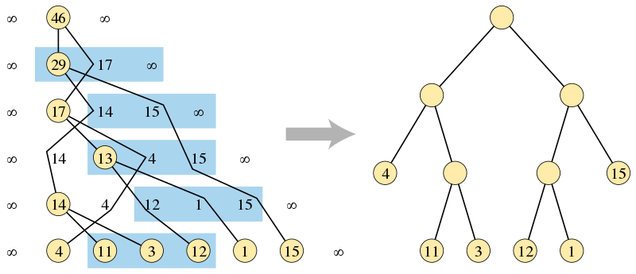

OI Wiki · prijevod · RaznoOI Wiki · translation · Miscellaneous
Garsia–Wachs algoritamGarsia–Wachs algorithm
Sadržaj
Uvod
Garsia–Wachs algoritam (Garsia–Wachs Algorithm) učinkovit je algoritam kojim računalo u linearnom vremenu gradi optimalno binarno stablo pretraživanja i alfabetski Huffmanov kod. Nazvan je po Adrianu Garsiji i Michelle L. Wachs, koji su 1977. objavili odgovarajući rad.
Opis problema
Zadan je cijeli broj \(n\). Za \(n+1\) nenegativnih težina \(w_{0},w_{1},\dots ,w_{n}\) treba konstruirati korijensko binarno stablo u kojem svaki od \(n\) unutarnjih čvorova ima dva djeteta, što znači da to binarno stablo ima \(n+1\) listova. Ulazni niz duljine \(n+1\) bijektivno preslikavamo na čvorove binarnog stabla u njihovu redoslijedu, a cilj je među svim mogućim strukturama stabla s \(n\) unutarnjih čvorova naći stablo za koje je težinska suma vanjskih duljina puta od korijena do svakog lista najmanja.
Optimalno binarno stablo pretraživanja
Ovaj se problem može shvatiti kao problem konstruiranja binarnog stabla pretraživanja nad \(n\) uređenih ključeva, uz pretpostavku da će se stablo koristiti samo za traženje vrijednosti koje u njemu ne postoje. U tom slučaju \(n\) ključeva dijeli prostor traženih vrijednosti na \(n+1\) intervala, a težina jednog od tih intervala može se uzeti kao vjerojatnost da tražena vrijednost padne u taj interval. Težinska suma vanjskih duljina puta određuje očekivano vrijeme pretraživanja.
Alfabetski Huffmanov kod
Ovaj se problem može upotrijebiti i za konstruiranje Huffmanova koda. To je metoda jednoznačnog kodiranja \(n+1\) zadanih vrijednosti pomoću binarnih nizova promjenjive duljine. U toj interpretaciji kod vrijednosti zadan je nizom lijevih i desnih koraka od roditelja do djeteta na putu od korijena do lista u stablu (npr. lijevo je \(0\), desno \(1\)). Za razliku od standardnog Huffmanova koda, Huffmanov kod konstruiran na ovaj način alfabetski je uređen, tj. poredak tih binarnih kodova jednak je ulaznom poretku vrijednosti. Ako je težina vrijednosti njezina frekvencija u kodiranoj poruci, izlaz Garsia–Wachs algoritma alfabetski je uređen Huffmanov kod koji sažima poruku na najmanju duljinu.
Postupak
Garsia–Wachs algoritam općenito se sastoji od tri faze:
- Konstruiramo binarno stablo čije su vrijednosti u listovima, pri čemu redoslijed može biti pogrešan.
- Izračunamo udaljenost od korijena do svakog lista u stablu.
- Konstruiramo drugo binarno stablo s jednakim udaljenostima listova, ali ispravnim redoslijedom.

Kao što prikazuje gornja slika, u prvoj fazi algoritma gradi se binarno stablo (lijevo) traženjem i spajanjem neuređenih trojki ulaznog niza, a izlaz algoritma jest ispravno uređeno binarno stablo u kojem su visine listova jednake kao u drugom stablu.
Prva faza algoritma lakše se opisuje ako se na početak i kraj ulaznog niza dodaju dvije granične vrijednosti \(\infty\) (ili bilo koja dovoljno velika konačna vrijednost). Zato se pri korištenju Garsia–Wachs algoritma u natjecateljskim rješenjima za niz \(\mathit{num}\) duljine \(n\) obično definira \(\mathit{num}[0] = \mathit{num}[n+1] = \infty\).
Prva faza održava šumu koja se na početku sastoji od jednočvornih stabala stvorenih za svaku ulaznu težinu koja nije stražar (non-sentinel). Svakom je stablu pridružena vrijednost, zbroj težina njegovih listova; za svaku ulaznu težinu koja nije stražar nastaje jedan čvor stabla. Da bi se održavao niz tih vrijednosti, na svakom su kraju dvije granične vrijednosti. Početni niz čine samo težine listova u ulaznom redoslijedu. Zatim se sljedeći koraci ponavljaju, pri čemu svaki korak smanjuje duljinu ulaznog niza, dok ne ostane samo jedno stablo koje sadrži sve listove:
- U nizu nađemo prve tri uzastopne vrijednosti \(x\), \(y\), \(z\) takve da je \(x \leq z\). Budući da je granična vrijednost na kraju niza veća od bilo kojih dviju konačnih vrijednosti ispred nje, takva trojka uvijek postoji.
- Uklonimo \(x\) i \(y\) iz niza i stvorimo novi čvor stabla kao roditelja čvorova \(x\) i \(y\), s vrijednošću \(x+y\).
- Novi čvor ponovno umetnemo desno od vrijednosti koja je ispred izvornog položaja \(x\)-a najbliža \(x\)-u, a veća je ili jednaka \(x+y\). Zbog lijeve granične vrijednosti takav položaj uvijek postoji.
Da bi se ta faza učinkovito implementirala, algoritam može trenutni niz vrijednosti održavati u bilo kojoj strukturi balansiranog binarnog stabla pretraživanja. Takva nam struktura omogućuje da u logaritamskom vremenu uklonimo \(x\) i \(y\) te ponovno umetnemo njihova novog roditelja. U svakom koraku težine na parnim indeksima niza do vrijednosti \(y\) tvore jedan padajući niz, a težine na neparnim indeksima tvore drugi padajući niz. Stoga se položaj za ponovno umetanje \(x+y\) može naći u logaritamskom vremenu dvama binarnim pretraživanjima po tim dvama padajućim nizovima pomoću balansiranog stabla. Linearnim sekvencijalnim pretraživanjem koje počinje od vrijednosti \(z\) prethodne trojke možemo traženje prvog položaja koji zadovoljava \(x \leq z\) obaviti u ukupno linearnoj vremenskoj složenosti.
Dokaz treće faze Garsia–Wachs algoritma, tj. da postoji drugo stablo s jednakim udaljenostima i da to stablo daje optimalno rješenje problema, vrlo je važan. No budući da postoji više načina dokazivanja i da su previše složeni, ovdje ga izostavljamo. Uz pretpostavku da je treća faza ispravna, druga i treća faza lako se implementiraju u linearnom vremenu. Stoga je na ulaznom nizu duljine \(n\) ukupna vremenska složenost Garsia–Wachs algoritma \(O(n\log n)\).
Primjene
Paket garsia-wachs funkcijskog programskog jezika Haskell daje funkcijsku implementaciju Garsia–Wachs algoritma. Služi uglavnom za izgradnju optimalnih tablica pretraživanja ili za balansiranje strukture podataka rope s optimalnom složenošću.
Napomena
rope je alat u jeziku Haskell za rad s finger treeovima nad nizovima bajtova (bytestring) s neobaveznim anotacijama.
Primjeri zadataka
POJ 1738 An old Stone Game
Postoji stara igra s kamenjem. Na početku igre igrač poreda \(n\) (\(1 \leq n \leq 50000\)) hrpa kamenja u red. Cilj je spojiti kamenje u jednu hrpu po sljedećim pravilima: u svakom koraku igre igrač može spojiti dvije susjedne hrpe u jednu novu hrpu. Bodovi su ukupan broj kamenova u novoj hrpi. Izračunajte najmanji mogući ukupan broj bodova.
Ideja rješenja
Zadatak o spajanju hrpa kamenja klasičan je; obično ga rješavamo intervalnim DP-om, ali kad je količina podataka velika, npr. \(n\) (\(1 \leq n \leq 50000\)) kao u ovom zadatku, učinkovitije je rješavati ga Garsia–Wachs algoritmom. Prvi korak: inicijaliziramo niz \(\mathit{num}[n]\) veličine \(n\), pri čemu je \(\mathit{num}[0] = \mathit{num}[n+1] = \infty\). Drugi korak: svaki put nađemo najmanji \(i\) takav da je \(\mathit{num}[i-1] \leq \mathit{num}[i+1]\) i spojimo \(\mathit{num}[i-1], \mathit{num}[i]\) u \(\mathit{temp}\); zatim ispred nađemo najveći \(j\) takav da je \(\mathit{num}[j] > \mathit{temp}\) i premjestimo \(\mathit{temp}\) iza \(j\). Taj korak ponavljamo dok ne ostane \(1\) hrpa. Što se tiče zahtjeva da se smiju spajati samo susjedne hrpe kamenja: budući da je \(\mathit{num}[j]\geq \mathit{num}[i-1] + \mathit{num}[i]\), elemente od \(\mathit{num}[j+1]\) do \(\mathit{num}[i-2]\) možemo promatrati kao jednu cjelinu \(\mathit{num}[mid]\), pa se sigurno najprije spaja \(\mathit{sum}\). Zahtjev zadatka stoga nije narušen.
ATCODER N-Slimes
\(N\) slimeova stoji u redu. Na početku je veličina \(i\)-tog slimea slijeva \(a_{i}\). Taro pokušava spojiti sve slimeove u jedan veći slime. Uzastopno ponavlja sljedeću operaciju dok ne ostane samo jedan slime: odabere dva susjedna slimea i spoji ih u novi slime. Veličina novog slimea je \(x+y\), gdje su \(x\) i \(y\) veličine slimeova prije spajanja. Taj korak ima cijenu \(x+y\). Pri spajanju slimeova njihov se međusobni položaj ne mijenja. Odredite najmanju moguću ukupnu cijenu.
Literatura i dodatno čitanje
Contents
Introduction
The Garsia–Wachs algorithm is an efficient algorithm used by computers to build an optimal binary search tree and an alphabetic Huffman code in linear time. It is named after Adriano Garsia and Michelle L. Wachs, who published the corresponding paper in 1977.
Problem description
Given an integer \(n\) and \(n+1\) non-negative weights \(w_{0},w_{1},\dots ,w_{n}\), construct a rooted binary tree in which each of the \(n\) internal nodes has two children, which means that the binary tree has \(n+1\) leaves. We map the input sequence of length \(n+1\) one-to-one onto the nodes of the binary tree in order, and the goal is to find, among all possible tree structures with \(n\) internal nodes, a tree that minimizes the weighted sum of the external path lengths from the root to every leaf.
Optimal binary search tree
This problem can be understood as the problem of constructing a binary search tree over \(n\) ordered keys, assuming that the tree will only be used to search for values that are not present in the tree. In this case the \(n\) keys partition the space of search values into \(n+1\) intervals, and the weight of one of these intervals can be taken as the probability that the search value falls into that interval. The weighted sum of the external path lengths controls the expected search time.
Alphabetic Huffman code
This problem can also be used to construct a Huffman code. This is a method of unambiguously encoding \(n+1\) given values using variable-length sequences of binary values. In this interpretation, the code of a value is given by the sequence of left and right steps from parent to child on the path from the root of the tree to the leaf (for example, \(0\) for left and \(1\) for right). Unlike the standard Huffman code, a Huffman code constructed in this way is alphabetic, i.e. the sorted order of these binary codes is the same as the input order of the values. If the weight of a value is its frequency in the encoded message, then the output of the Garsia–Wachs algorithm is the alphabetic Huffman code that compresses the message to the shortest length.
Procedure
The Garsia–Wachs algorithm generally consists of three phases:
- Build a binary tree whose values are in the leaves, noting that the order may be wrong.
- Compute the distance from the root to each leaf in the tree.
- Build another binary tree with the same leaf distances but the correct order.
As shown in the figure above, in the first phase of the algorithm a binary tree (left) is built by finding and merging unordered triples of the input sequence, and the output of the algorithm is a correctly ordered binary tree whose leaf heights are the same as in the other tree.
The first phase of the algorithm is easier to describe if two sentinel values \(\infty\) (or any sufficiently large finite value) are added at the beginning and the end of the input sequence. Therefore, when using the Garsia–Wachs algorithm in contest solutions, for an array \(\mathit{num}\) of length \(n\) we usually define \(\mathit{num}[0] = \mathit{num}[n+1] = \infty\).
The first phase maintains a forest consisting initially of single-node trees created for each non-sentinel input weight. Each tree is associated with a value, the sum of the weights of its leaves; one tree node is created for each non-sentinel input weight. To maintain the sequence of these values, there are two sentinel values at each end. The initial sequence is just the leaf weights in input order. Then the following steps are repeated, each of which reduces the length of the input sequence, until only one tree containing all leaves remains:
- Find the first three consecutive weights \(x\), \(y\), \(z\) in the sequence such that \(x \leq z\). Because the sentinel value at the end of the sequence is greater than any two finite values before it, such a triple always exists.
- Remove \(x\) and \(y\) from the sequence and create a new tree node as the parent of the nodes \(x\) and \(y\), with value \(x+y\).
- Re-insert the new node to the right of the value closest to \(x\) among those before the original position of \(x\) that are greater than or equal to \(x+y\). Because of the left sentinel value, such a position always exists.
To implement this phase efficiently, the algorithm can maintain the current sequence of values in any balanced binary search tree structure. Such a structure lets us remove \(x\) and \(y\) and re-insert their new parent in logarithmic time. In each step, the weights at even indices of the array up to the value \(y\) form a decreasing sequence, and the weights at odd indices form another decreasing sequence. Therefore, the position for re-inserting \(x+y\) can be found in logarithmic time by performing two binary searches on these two decreasing sequences using the balanced tree. By a linear sequential search starting from the value \(z\) of the previous triple, we can perform the search for the first position satisfying \(x \leq z\) in linear total time.
The proof of the third phase of the Garsia–Wachs algorithm, namely that another tree with the same distances exists and that this tree gives the optimal solution of the problem, is very important. However, since there are several ways to prove it and they are too complicated, it is omitted here. Assuming that the third phase is correct, the second and third phases are easy to implement in linear time. Therefore, on an input sequence of length \(n\), the total time complexity of the Garsia–Wachs algorithm is \(O(n\log n)\).
Applications
The garsia-wachs package of the functional programming language Haskell provides a functional implementation of the Garsia–Wachs algorithm. It is mainly used to build optimal search tables or to balance the rope data structure with optimal complexity.
Note
rope is a tool in the Haskell language for manipulating finger trees of bytestrings with optional annotations.
Example problems
POJ 1738 An old Stone Game
There is an old stone game. At the beginning of the game, the player lines up \(n\) (\(1 \leq n \leq 50000\)) piles of stones in a row. The goal is to merge the stones into one pile according to the following rules: in each step of the game, the player may merge two adjacent piles into a new pile. The score is the total number of stones in the new pile. Compute the minimum possible total score.
Solution idea
The stone merging problem is a classic one; we can usually solve it with interval DP, but when the amount of data is large, e.g. \(n\) (\(1 \leq n \leq 50000\)) as in this problem, solving it with the Garsia–Wachs algorithm is more efficient. Step one: initialize an array \(\mathit{num}[n]\) of size \(n\), where \(\mathit{num}[0] = \mathit{num}[n+1] = \infty\). Step two: each time, find the smallest \(i\) such that \(\mathit{num}[i-1] \leq \mathit{num}[i+1]\) and merge \(\mathit{num}[i-1], \mathit{num}[i]\) into \(\mathit{temp}\); then find the largest \(j\) before it such that \(\mathit{num}[j] > \mathit{temp}\) and move \(\mathit{temp}\) right after \(j\). Repeat this step until \(1\) pile remains. As for the requirement that only adjacent piles of stones may be merged: since \(\mathit{num}[j]\geq \mathit{num}[i-1] + \mathit{num}[i]\), we can regard \(\mathit{num}[j+1]\) through \(\mathit{num}[i-2]\) as a single whole \(\mathit{num}[mid]\), so \(\mathit{sum}\) is certainly merged first. Therefore the requirement of the problem is not violated.
ATCODER N-Slimes
There are \(N\) slimes lined up in a row. Initially, the size of the \(i\)-th slime from the left is \(a_{i}\). Taro is trying to combine all the slimes into one larger slime. He repeatedly performs the following operation until there is only one slime: choose two adjacent slimes and combine them into a new slime. The new slime has size \(x+y\), where \(x\) and \(y\) are the sizes of the slimes before combining. This step has a cost of \(x+y\). The positions of the slimes do not change when they are combined. Find the minimum possible total cost incurred.